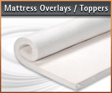

"Fourways Chiropractic For the Whole Family"
Chiropractors generally like memory foam pillows and mattresses for their patients sleep hygiene. At the chiropractic clinic we currently stock the Sleep Active memory foam pillow. So if you are looking for a memory foam pillow or even a memory foam mattress we can help you.
There are many makes of memory foam pillows and mattresses out there which can be confusing as to which one to choose. Just remember memory foam is different from your typical foam and a memory foam mattress is not made entirely of memory foam material. Only the first few cm's on the top of the mattress is the memory foam.
You may have read that MEMORY FOAM™ and LATEX FOAM™ is the latest sleep technology replacing old spring and conventional foam mattresses worldwide. Memory foam is recommended by different medical and health care professionals for its therapeutic and pressure relieving properties. Memory foam can improve sleep hygiene by improving pressure areas on the body making you toss and turn less. Memory Foam is also allergy free, anti bacterial, maintenance free and does not attract bed mites.
As mentioned earlier ChiroClinic Products currently has stock at the chiropractic clinic of the memory foam pillow made by local South African memory foam pillow and mattress company, Sleep Active. Chiropractors know that a good night sleep can help with the recovery process from headaches, neck ache and towards general wellbeing. A memory foam pillow can be the best cervical neck pillow for patients to sleep on.
The Memory Foam Pillow we supply comes in one size and shape. The foam is the softest memory foam option available. This is because we believe it is the viscoelastic foam not the shape that is most important about a memory foam pillow.
The 2011 cost of the Memory Foam Pillow is R660.00
To order memory foam pillows from ChiroClinic Products you can email your order here. You can also ask for a quote if needed for courier delivery to anywhere in South Africa. We would need the exact delivery address for a final quote price.
* Payment accepted can be via internet transfer (proof will be required before pick-up), cash/credit card on the day of pick up from the clinic.
Here are some of the the facts about memory foam mattresses. A quality mattress should provide 8-10 years of good support and comfort. An average person spends 30% of their life sleeping, so the importance of a healthy and accurate mattress cannot be ignored.
A good quality mattress is important for healthy living and this applies to adults, the elderly, young children and babies. A quality memory foam mattress may be pricy compared to spring mattresses, but will certainly contribute to your health for over 20 years with the best support and comfort known to sleep technology.
If you would like you can just get the memory foam overlay. This means if your current mattress is still of good qulaity you can just add memory foam on top of it instead of buying a whole new mattress.
Read below how to take care for your mattress.
You can read below the gaurentee SleepActive give regarding their memory foam mattress.
At Sleep Active we know that every human body is different and we all have individual needs, this is why we strive to get each person on the right sleeping surface, even if it means customizing.
Our comfort guarantee works as follows:
After purchasing any Sleep Active product (from an Authorized dealer or medical partner) the human body can take up to 21 days to adjust to this new sleeping surface.
The product helps in aligning the neck and spine and depending on the shape the body is in, this might take up to 3 weeks. This happens as the memory foam™ and latex foam™ lets your body lie in its most natural position without any upward or outside pressure.
We then allow a further 60 days for the person to give us feedback on the mattress. If there are any aches and pains, or any symptoms that could arise from the new mattress, we will the assess the situation and, change the mattress for one more suitable.
As we are human beings and creatures of habit, we try find something that our bodies feel comfortable with at that particular moment, but like any good pair of running shoes, you will never know if they are suitable for the purpose unless you have actually run a marathon in them.
Buying a Sleep Active product is not just about buying a new bed, but actually improving your lifestyle by giving your body what it needs most to recharge itself – SLEEP.
The mattress must be returned in a “like new” condition” as we will not exchange any mattressess that have been abused or stained.
Please use this form for all your pillow and mattress related enquiries. We will try answer your question within 24 - 48 Hrs.
Other Health Products: